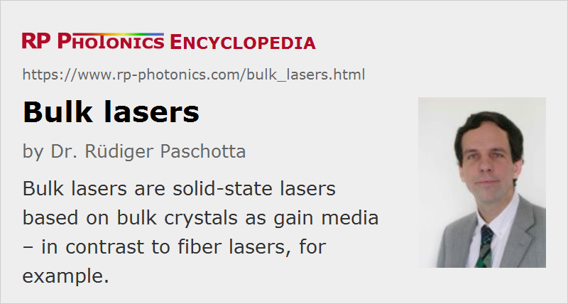

Bulk Lasers
Definition: lasers based on bulk crystals as gain media
More general term: solid-state lasers
More specific terms: end-pumped lasers, side-pumped lasers, rod lasers, slab lasers, thin-disk lasers
German: Bulk-Laser
How to cite the article; suggest additional literature
Author: Dr. Rüdiger Paschotta
The term bulk laser refers to a solid-state laser with a bulk piece of doped crystal or glass as the gain medium. It is used to distinguish such bulk lasers from waveguide lasers and in particular from fiber lasers (= lasers based on fiber optics). In most cases, the gain medium is doped either with rare earth ions or transition metal ions, but bulk lasers also include color center lasers.
As there is no waveguide structure, so that the beam propagates in free space between optical components, the beam radius in the gain medium is essentially determined not by the gain medium, but by the design of the laser resonator. This has important implications:
- The resonator may be designed for a large effective mode area in the crystal so as to allow e.g. Q-switched operation with very high pulse energy.
- Alternatively, a small mode area allows for a low threshold pump power. However, it implies a strong beam divergence and therefore cannot be maintained over a large length of material.
- The beam radius can be influenced by e.g. thermal lensing and may change when the pump power is changed. Optimized resonator design minimizes the impact of thermal lensing and the alignment sensitivity.
The laser resonator of a bulk laser is in most cases formed with discrete laser mirrors placed around the crystal (or glass), with an air space in between. The air space between the mirrors and the crystal also has important implications:
- It allows the simple insertion of additional optical elements, such as a birefringent tuner or other kind of optical filter, a Q switch for nanosecond pulse generation, or a nonlinear crystal for intracavity frequency doubling.
- Optical elements, particularly laser mirrors, have to be precisely aligned, and that alignment may be lost e.g. due to thermal drifts or mechanical vibrations.
- Dust particles or organic matter in the air may be deposited on laser mirrors and other components, particularly when high optical intensities and/or short wavelengths are involved. For long-term reliable operation, the laser housing may therefore have to be sealed.
In many cases, the mirrors and other optical components are attached to adjustable mounts, where two or three micrometer screws allow for precise angular adjustments. In many industrial lasers and certain mass-produced OEM laser modules, these adjustable mounts are replaced with fixed mounts, which can be more robust (also less sensitive to temperature drifts) and cost-effective. Optical components can be soldered to their mounts, leading to very stable setups.
It is also possible to use a laser crystal with a highly reflecting dielectric mirror coating on one side, which serves as a resonator end mirror. There are also monolithic solid-state lasers where the beam path is entirely inside the crystal.
As a rule of thumb, bulk lasers and amplifiers are preferable for devices operating with high peak power, whereas low-threshold and high-gain operation is more easily achieved with waveguide lasers and amplifiers. Also, bulk lasers are more flexible e.g. in laboratory setups, as it is comparatively easy to add or exchange optical elements, whereas waveguide-type lasers are possibly cheaper to manufacture.
Questions and Comments from Users
Here you can submit questions and comments. As far as they get accepted by the author, they will appear above this paragraph together with the author’s answer. The author will decide on acceptance based on certain criteria. Essentially, the issue must be of sufficiently broad interest.
Please do not enter personal data here; we would otherwise delete it soon. (See also our privacy declaration.) If you wish to receive personal feedback or consultancy from the author, please contact him e.g. via e-mail.
By submitting the information, you give your consent to the potential publication of your inputs on our website according to our rules. (If you later retract your consent, we will delete those inputs.) As your inputs are first reviewed by the author, they may be published with some delay.
See also: solid-state lasers, fiber lasers, fiber lasers versus bulk lasers, rare-earth-doped gain media, transition-metal-doped gain media
and other articles in the category lasers
|  |
If you like this page, please share the link with your friends and colleagues, e.g. via social media:
These sharing buttons are implemented in a privacy-friendly way!